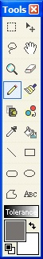
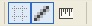
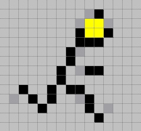

 The
Pencil Tool (Tools -->Pencil) allows for simple drawing upon the active
layer with a line of size 1. A tool very similar to this is the
Paint Brush,
but the Pencil tool only draws one pixel aliased lines.
|
|
In most cases, the pencil tool is useful for making
precise patterns and images. When zoomed in, for example, you can turn on grid
mode to see where exactly each pixel on the image is located. This is
especially useful for designing icons. As shown in the image below, a user can
see where each pixel is because of grid mode, and use the pencil tool to
precisely edit it.
 Grid mode is
enabled by depressing the grid looking icon to the left
Before Pencil Tool
 |
After Pencil Tool is used
 |
|
| Important: The Pencil Tool, along with
all the other tools that alter the layer must be used within a selected area
(if one so exists) created by either the
Rectangle or
the Lasso Selection
Tools . If you are attempting
to use this tool outside of an existing selection, no alterations to the active
layer will take place. |